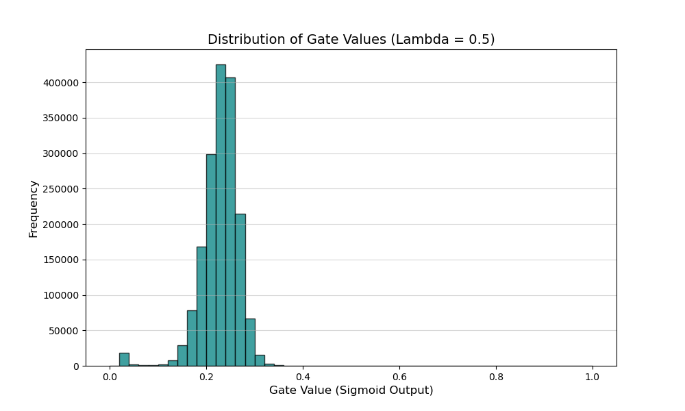

Self-Pruning Network Monitor
Real-time Training & Sparsity Dashboard
Select Lambda (λ):
Loading...
Auto-Refresh: ON
Classification Loss
Validation Accuracy & Network Sparsity
Layer-wise Sparsity (Final/Current Epoch)
Final Gate Distribution

Waiting for training completion...